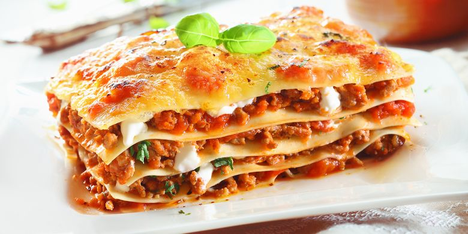

Lasagna recipe

Description:
Lasagne are a type of pasta, possibly one of the oldest types, made of very wide, flat sheets.
Ingredients:
- Sweet Italian sausage
- Ground beef
- Lasagna noodles
Steps:
- In a Dutch oven, cook sausage, ground beef, onion, and garlic over medium heat until well browned.
- Bring a large pot of lightly salted water to a boil. Cook lasagna noodles in boiling water for 8 to 10 minutes.
- Preheat oven to 375 degrees F (190 degrees C).
- To assemble, spread 1 1/2 cups of meat sauce in the bottom of a 9x13-inch baking dish.
- Bake in preheated oven for 25 minutes. Remove foil, and bake an additional 25 minutes. Cool for 15 minutes before serving.